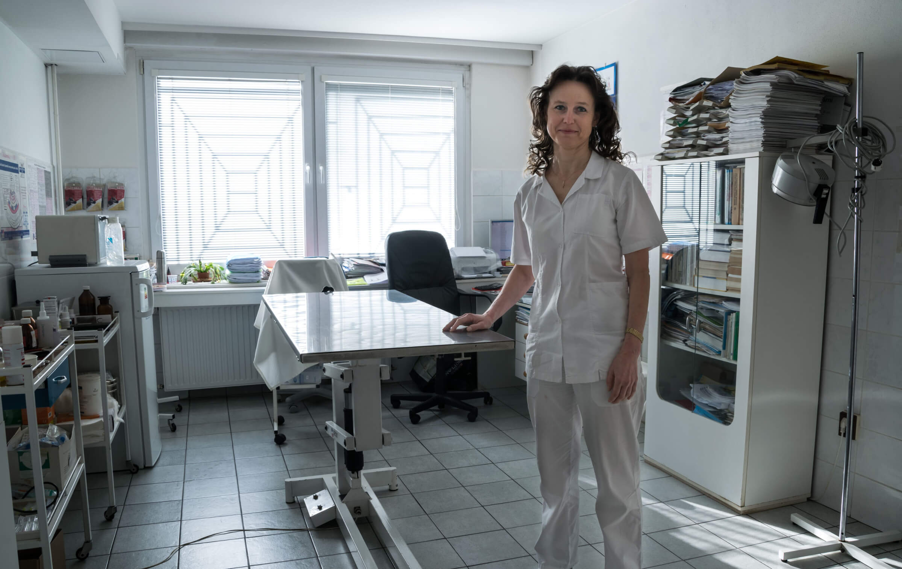

MVDr. Dana Zemancová
Již od roku 1995 poskytuje odbornou preventivní péči a léčbu psů, koček a dalších malých zvířat. Nabízené služby zahrnují drobné úkony jako očkování, čipování nebo odčervení. Dále poskytujeme laboratorní a mikroskopická vyšetření a drobné chirurgické zákroky.
